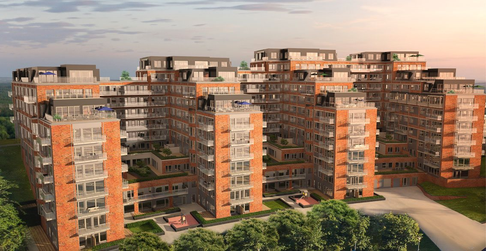

SKANSKA
BRF The View
Det ger er:
Sänkta kostnader i produktion och eftermarknad.
Möjlighet till färdigt projekt med noll byggfel
på avtalad dag.
Säker och lättillgänglig dokumentation.
Tillgång till vår ”Byggfelsbank”.
Mer om digitaliserad entreprenadbesiktning
Tryck här så kontaktar vi digHär entreprenadbesiktar vi just nu
BRF Skogsstjärnan

BRF The View
BRF Haganova

BRF Terrassen

Vi erbjuder ett komplett utbud av entreprenadbesiktningstjänster för nyproduktion och ROT.
Vi erbjuder också ett samlat helhetskoncept med iSpect för ökad lönsamhet och leveranssäkerhet i byggprojekt.
Det ger bland annat möjlighet till noll byggfel vid slutbesiktning.
Våra tjänster för entreprenadbesiktning
Vårt helhetskoncept med iSpect


Besiktningsman.se erbjuder tjänster och besiktningsmän för samtliga fack för besiktning av nyproduktion och ROT-arbeten i bostadrättsfastigheter, samt KA-ansvariga.
Våra tjänster för Bostadsrättsföreningar
Mer om vårt erbjudande

iSpect ger direkt felavhjälpning, lättillgänglig och säker dokumentation samt noll byggfel.
Vårt helhetskoncept med iSpect
Redo att sätta igång? Tryck här
Besiktning och KA-tjänster över hela landet
Miljöarbetet skall vara förebyggande och öppet med ständig förbättring i fokus.
I vår verksamhet ska miljölagstiftning och myndighetskrav utgöra miniminivå för miljöarbetet.
Våra miljömål ska baseras på vår miljöpåverkan, kontinuerligt följas upp och anpassas till verksamheten.
Råvaror och energi ska utnyttjas så effektivt som möjligt. Återanvändning och återvinning skall underlättas.
Alla anställda är väl informerade om hur vi tillsammans kan påverka och förbättra miljön omkring oss. Genom denna inriktning vill vi bidra till en bättre omvärld samt göra företaget mer attraktivt för anställda, samarbetspartners samt kunder.
Vi arbetar utifrån inställningen att ett lyckat mångfalds- och jämlikhetsarbete leder till jämställdhet. Detta arbete främjar både medarbetarnas och företagets utveckling.
Praktiskt innebär det bland annat att medarbetarna på företaget ska representera en mångfald vad gäller:
• Man – Kvinna
• Ung – Gammal
• Olika kulturella bakgrunder
• Olika kompetenser
• Geografisk spridning
Ingen ska diskrimineras på grund av kön eller sexuell läggning.
Kan besiktningsmannen under sitt arbete kontrollera, dokumentera, lagra och sända alla noteringar och projektdata direkt via sin läsplatta.

• en modern besiktningsprocess
• besiktningsappen iSpect
• kompletta besiktningsgrupper samt KA för er produktion.
• granskning av handlingar
• fortlöpande besiktning från start till mål
• iSpectPortal
• utlåtande direkt
• sorterade felbilagor med ansvar för respektive UE/E
• statistik på fel, antal fel per UE/E och utrymme
• erfarenhetsåterföring
• översikt gällande utförda besiktningar, felnoteringar, besiktningsstatus och omfattning
1 arbete efter färdigställandet av entreprenaden inte är eller inte utan väsentligt ingrepp blir åtkomligt för besiktning.
2 avhjälpande av fel i arbete efter färdigställande skulle vara till väsentlig olägenhet för parten
3 arbete före färdigställande tas i bruk av beställaren eller
4 i övrigt särskilda skäl föreligger
”Kommentar till kap 7 §1 i AB04 och ABT06, Ett särskilt skäl för förbesiktning kan vara att parterna i förväg vill få besiktningsmannens bedömning av kontraktsenhetligheten av visst arbete som antingen återkommer i ett stort antal eller gäller principer eller kvalitetskrav för utförandet, sk normerande besiktning.”
• ”Besiktning enligt §§1-5 i detta kapitel 7 verkställs av en därtill lämpad person som beställaren utser. Om parterna kommer överens om det kan besiktningen i stället verkställas av en person som de gemensamt utser. Om part underlåter att medverka till att besiktningsman utses för besiktning enligt §1 eller §4 i detta kapitel 7 får motparten utse besiktningsman.”
• ”Slutbesiktning skall, om inte parterna avtalat om annat, verkställas vid kontraktstidens utgång eller, om entreprenaden färdigställs senare, utan dröjsmål efter det att entreprenaden anmälts vara färdigställd. Entreprenören skall i god tid underrätta beställaren när entreprenaden beräknas vara färdigställd och tillgänglig för slutbesiktning, om inte parterna genom besiktningsplan har träffat särskild överenskommelse.”
• ”En del av entreprenaden kan efter parternas överenskommelse göras till föremål för kompletterande slutbesiktning. Kompletterande slutbesiktning utgör inte hinder för entreprenadens godkännande, om inte annat avtalats.” Handledning enligt BKKs handledning för entreprenadbesiktning
• ”Slutbesiktningen är den för båda parter viktigaste besiktningen. Det gäller nämligen här att pröva och avgöra frågan om godkännande av entreprenaden, vilket i sin tur har många betydelsefulla konsekvenser för parterna. Det bör betonas, att – om inte parterna kommer överens om annat – slutbesiktning ska ske först vid kontraktstidens utgång eller om entreprenaden färdigställas senare, utan dröjsmål efter det att entreprenören anmält entreprenaden färdigställd.”
”Om entreprenaden vid slutbesiktningen uppenbarligen inte är så färdigställd att den kan godkännas får besiktningsmannen avbryta besiktningen och föreskriva ny slutbesiktning.”
Handledning till kap 7§12 enligt BKKs handledning till entreprenadbesiktning
”Förutsättningen för besiktningsmannens beslut att avbryta besiktningen är hans bedömning av möjligheten av att entreprenaden kommer att godkännas.
Som angivits ovan kan man inte närmare ange någon nivå för när en entreprenad inte kan godkännas. Bedömningen får ske från fall till fall med hänsyn taget bla till objektets art och omfattning.
Begreppet ”uppenbarligen” innebär att det enligt besiktningsmannens bedömning ska framstå som fullständigt klart att entreprenaden i det skick den är inte kan komma att godkännas.”
”Om entreprenaden inte godkänns skall besiktningsmannen föreskriva fortsatt slutbesiktning.
Om entreprenaden inte godkänns eller avbryts skall besiktningsmannen i sitt utlåtande ange skälen för beslutet.”
”Den fortsatta slutbesiktningen ska principiellt omfatta hela entreprenaden, men kan i praktiken begränsas till sådana arbeten och funktioner som föranlett icke-godkännandet.”
Handledning enligt BKKs handledning för entreprenadbesiktning
”Förutsättningarna för att godkänna entreprenaden är inte uppfyllda om felen medför att användbarheten inskränks eller att säkerheten ifrågasätts om entreprenaden avlämnas.”
- Kommentar,
Entreprenören avgör vilken tid som behövs för avhjälpande och avropar i god tid när entreprenaden är färdig för fortsatt slutbesiktning.
”Part har rätt att påkalla efterbesiktning för konstaterande av om ett fel avhjälpts.
Efterbesiktning verkställs utan dröjsmål efter avhjälpandet. Beställaren får också påkalla
efterbesiktning om entreprenören underlåter att avhjälpa felet i rätt tid.”
”Om entreprenören har påkallat efterbesiktning men någon sådan inte kommer till stånd på grund av beställarens underlåtenhet, skall de fel som efterbesiktningen avsågs omfatta anses vara avhjälpta.”
Handledning till kap 7 §5 i BKKs handledning till entreprenadbesiktning
”Vid efterbesiktning ska konstateras om fel avhjälpts. I utlåtande över efterbesiktning noteras de kvarvarande fel som inte avhjälpts och eventuella följdfel som uppkommit vid avhjälpandet. Fel som inte noterats tidigare ska inte tas
upp vid efterbesiktning.
Av beställaren skriftligt påtalat fel enligt kap7§12 ska inte heller tas upp, utan dessa ska behandlas som särskild besiktning om part påkallar sådan. Inget hindrar dock att en förrättning omfattar både efterbesiktning och särskild besiktning,
om detta angivits i kallelsen.”
”Part har rätt att efter entreprenadtidens utgång påkalla särskild besiktning avseende
1 sådant fel som beställaren har påtalat
2 entreprenadens status i visst avseende Särskild besiktning verkställs utan dröjsmål efter påkallandet.”
Handledning enligt BKKs handledning för entreprenadbesiktningar
”Särskild besiktning enligt punkt 1 ovan avser sådana av beställaren påtalade fel efter förhållanden som förelegat vid slutbesiktning men som då inte tagits upp på grund av att de inte märkts, eller att besiktningsmannen förbisett felet.
Särskild besiktning enligt punkt 2 ovan avser dels fel som framträtt under garantitiden och där garantiansvar eventuellt föreligger, och dels sådana fel som framträtt efter garantitidens utgång men inom den 10-åriga ansvarstiden.”
”Statusbesiktning: Sådan särskild besiktning som enligt ABT06 kan påkallas av part avseende entreprenadens status i visst avseende, även om det saknas indikationer om fel.”
”Före utgången av den kortaste garantitiden verkställs garantibesiktning, om parterna inte kommer överens om annat. Garantibesiktningen påkallas av beställaren.”
Handledning enligt BKKs handledning för besiktning
Besiktningsmannen ska vid garantibesiktning inte notera förhållanden som lämnats utan anmärkning vid slutbesiktning.
Garantibesiktningen ska normalt inte omfatta ej avhjälpta fel från slutbesiktningen.”
- Kommentar,
Vid bokning av garantibesiktning kan ni tilläggsbeställa att även efterbesiktning av tidigare besiktning ska utföras.
”Part har rätt att påkalla överbesiktning av varje form besiktning. Genom överbesiktning prövas de frågor som har föranlett denna, tex frågan om entreprenadens godkännande, förekomsten av fel eller ansvar för fel.
Överbesiktning ersätter den besiktning eller del av besiktning som har föranlett påkallandet av överbesiktning.
Överbesiktning skall skriftligen påkallas inom tre veckor efter det att part fått del av besiktningsutlåtandet.”
”Överbesiktning verkställs av en person som parterna gemensamt utser eller av en överbesiktningsnämnd. En sådan nämnd skall bestå av tre personer, av vilka parterna vardera utser en och dessa två personer den tredje, som ska vara ordförande. Ledamot får inte tidigare ha verkställt besiktning i entreprenaden. ”
OVK ska göras innan ett ventilationssystem tas i bruk för första gången (första besiktning). För de flesta byggnader ska OVK sedan göras regelbundet, var 3 eller 6 år. Kontrollen utförs i en följd och förutsätter full åtkomst till samtliga lägenheter och utrymmen enligt upprättadbesiktningstidplan.
Vid nyproduktion, om och tillbyggnad krävs det en Kontrollansvarig (KA) – tidigare benämnd som kvalitetsansvarig – för att genomföra entreprenaden. Kontrollansvarig ser till att nödvändiga inspektioner utförs för att entreprenaden skall leva upp till myndighetskrav och gällande bygg- och branschregler.
Exempel på krav, god ventilation, energianvändning, fuktsäkerhet, tillgänglighet.
Vår kontrollansvarige hjälper er med upprättande av en kontrollplan med nödvändiga kontroller på plats av kontrollansvarig och entreprenörens redovisning av verifierade provningar samt egenkontroller.
Hela processen börjar med ett tekniskt samråd hos byggnadsnämnden. Därefter erhålles startbesked.
Efter att samtliga kontroller och provningar enligt kontrollplanen genomförts samlas parterna för slutsamråd. Därefter erhålls slutbesked från byggnadsnämnden, förutsatt att slutbesiktningen är godkänd.
Äldre fastigheter,
Har du tänkt på att de vanligaste fuktskadorna inte behöver beror på läckande vattenledningar?
Vind,
Fukt och mögel skador beror vanligen på bristfällig ventilation i boendedelen.Tex på grund av att den varma fuktiga luften transporteras upp till den kalla vinden där den kondenserar mot yttertaket. Framförallt vintertid är det störst
risk för fuktskador på vind. Har du tittat på insidan av yttertaket?
Krypgrund,
Tvärtemot vinden så är den största risken på vår-sommar för fukt och mögel skador. Har du lukt i huset?
Betongplatta på mark,
Om den är utförd 1985 eller tidigare är det vanligt förekommande att fukt från underliggande mark transportas upp i betongplattan och vidare upp i uppreglat golv. Har du lukt i huset?
Kan det finnas en fuktskada i din fastighet? Eller vill du försäkra dig om att allt är som det ska?
Idag är det möjligt att undersöka eventuella fukt och mögelskador utan att behöva göra större ingrepp i huset. Med hjälp av avancerade mätinstrument och provtagningar kan våra experter snabbt och exakt kontrollera om det finns fukt-,
mögelproblem och vad de i så fall beror på.
En fuktbesiktning är en bra investering även om du inte direkt misstänker ett fel. Ibland kan det ta lång tid innan läckage, fukttransporter, bristande ventilation, andra fel, ger sig tillkänna. Om indikation på skador upptäcks tidigare
desto mindre omfattande hinner skadorna och därmed kostnaderna för att åtgärda dem bli.
En fuktbesiktning ger också ökad trygghet för dig som säljare eller köpare av en fastighet. Det gäller såväl äldre som nyare fastigheter.Våra fuktbesiktningar utförs enbart av besiktningsmän med mångårig erfarenhet av hur fuktskador
uppkommer, hur de kan upptäckas och hur de kan åtgärdas. Självklart kan de också hjälpa dig med råd om förebyggande åtgärder.
Efter fuktbesiktningen e-postas ett utlåtande.
Utlåtandet innebär att du får ett oberoende och tillförlitligt underlag att visa upp för försäkringsbolag eller om det uppstår en tvist mellan dig och en motpart i samband med exempelvis byggnadsarbeten eller en försäljning.
Du kan även beställa en bedömning av åtgärds- och kostnads-förslag samt labtest.
Startsammanträde
Vi börjar alltid våra överlåtelsebesiktningar med att gå igenom uppdragsbekräftelsen med information för både köpare och säljare om hur besiktningen går till.
Besiktningsman förklarar olika typer av så kallade kända riskkonstruktioner och vad det innebär.
Säljaren informerar besiktningsförrättaren och köparen om vad de känner till om huset, både positivt och negativt.
Därefter påbörjas besiktningen
Därefter påbörjas en okulär fastighetsbesiktning av huvudbyggnaden, där vi tillsammans, besiktigar alla utrymmen som är tillgängliga via öppningar, luckor och liknande, samt de som i övrigt är krypbara.
Vi informerar om eventuella fel och risker med vissa konstruktioner löpande under överlåtelsebesiktningen.
Besiktningsförrättaren informerar även om löpande fastighetsskötsel och vad man som fastighetsägare skall tänka på. Vi anser att det är av stor vikt att både säljare och köpare deltar och följer med i överlåtelsebesiktningen.
Slutsammanträde
Efter besiktningen går vi sammanfattningsvis igenom vad som noterats och vilken påverkan eventuella fel och risker kan ha på huset. Besiktningsutlåtandet e-postas därefter till er, varvid ni noga läser igenom utlåtandet och kontaktar
besiktningsförrättaren med eventuella frågor.
Här byggs framtiden med noll fel